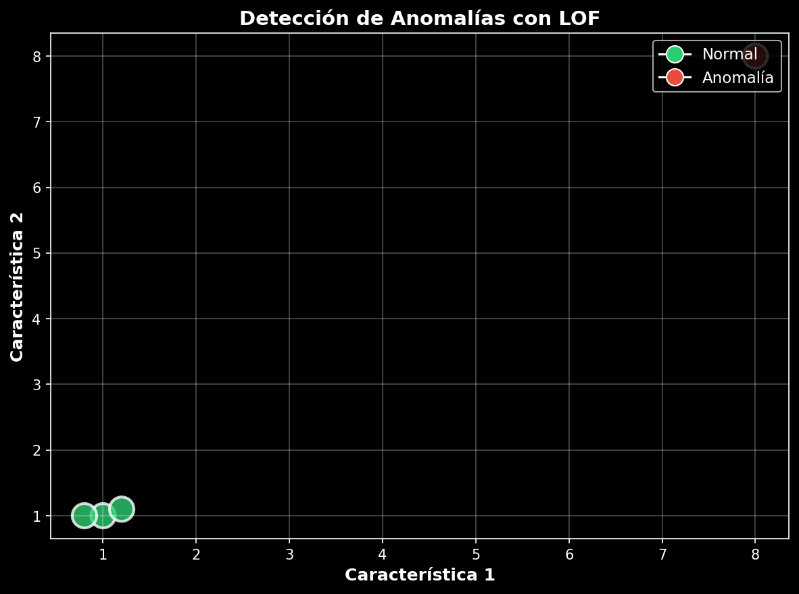
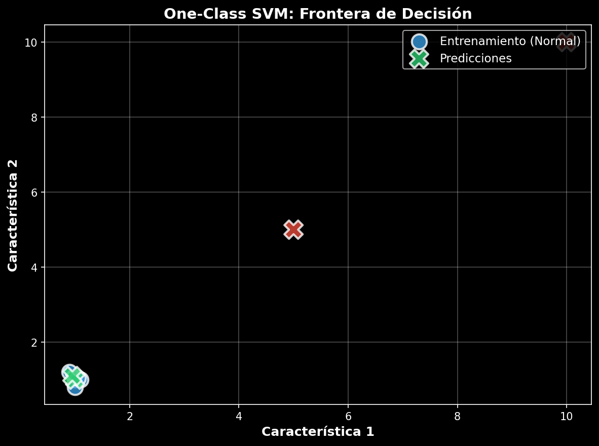
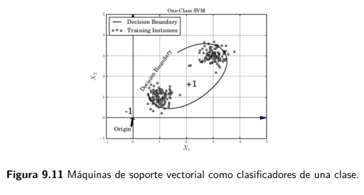

LOF y One-Class SVM
Idea Principal: Densidad local significativamente menor que vecinos
Ventajas - Anomalías locales - Interpretable - Clusters irregulares
Desventajas - Complejidad O(n²) - Sensible al parámetro k - Difícil en tiempo real
Paso 1: k-Nearest Neighbors - Encontrar los k puntos más cercanos.
Paso 2: Reachability Distance \[\text{reach-dist}_k(x, y) = \max\{k\text{-distance}(y), d(x, y)\}\]
Paso 3: LOF (Local Outlier Factor) \[\text{LOF}_k(x) = \frac{\text{densidad vecinos}}{\text{densidad del punto}}\]
| Valor | Significado |
|---|---|
| LOF ≈ 1 | Normal |
| LOF > 1 | Sospechoso |
| LOF >> 1 | Anomalía fuerte |
Idea Principal: Entrenar con datos normales, aprender una frontera compacta
Ventajas - Frontera flexible - Bueno en altas dimensiones
Desventajas - Requiere sintonización - Menos interpretable
Aprendizaje No Supervisado - Comportamiento de una clase normal
Función Objetivo \[\min_{w,b,\xi} \frac{1}{2}\|w\|^2 + \frac{1}{\nu n}\sum_{i=1}^{n}\xi_i - b\]
Parámetro \(\nu\) - \(\nu = 0.1\): 10% anomalías permitidas - \(\nu = 0.05\): 5% anomalías permitidas - Valores pequeños → frontera conservadora
| Aspecto | LOF | One-Class SVM |
|---|---|---|
| Tipo | Densidad local | Frontera |
| Parámetro principal | k | ν |
| Anomalías locales | Excelente | Regular |
| Anomalías globales | Regular | Mejor |
| Escalabilidad | Media | Alta |

Detección de Anomalías con LOF
Código: El modelo identifica puntos con baja densidad local como anomalías

One-Class SVM: Frontera de Decisión
Resultado: El modelo aprende una frontera compacta alrededor de los datos normales (azul) y clasifica nuevos puntos como normales (verde) o anomalías (rojo)
Paso a paso: Entrenar → Frontera → Evaluar

One-Class SVM: Frontera de Decisión
Flujo de Análisis:
¿En qué situaciones LOF funciona mejor que One-Class SVM?
¿Cómo afecta el parámetro k al comportamiento de LOF?
¿Qué otras aplicacionese en la industria tiene One-Class?
López Gaona, A., Avilés Rosas, G., & López Mendoza, S. (2021). Minería de datos con R (1.ª ed.). Universidad Nacional Autónoma de México, Facultad de Ciencias. ISBN: 978-607-30-4750-0.
MCP Analytics. (s.f.). One-Class SVM: Practical Guide for Data-Driven Decisions. Recuperado de: https://mcpanalytics.ai/articles/one-class-svm-practical-guide-for-data-driven-decisions
Documentación oficial de scikit-learn: